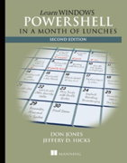
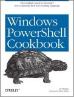
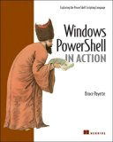

Download PowerShell:
PowerShell 5.1 Windows Management Framework 5.1 for Windows 7 SP 1, Windows 8.1, Windows 2008 R2, Windows 2012, Windows 2012 R2 - released 2017-01-19
PowerShell 5.0 - Windows Management Framework 5.0 for Windows Server 2012 R2, Windows Server 2012, Windows 2008 R2, Windows 8.1, and Windows 7 SP1 - released 2016-02-24
For Windows Server 2016 and Windows 10 updates to PowerShell are provided via Windows Update (Anniversary Edition).
PowerShell versions and OS compatibility:
PowerShell Version Windows 7 /
2008 R2 Sp1Windows8 / 2012 Windows8.1 / 2012 R2 Windows 10 / 2016 Windows Nano / IOT Linux / OSX PowerShell 6.0 Not Supported Not Supported Supported Supported Supported Supported Core Not Supported Not Supported Not Supported Not Supported DEFAULT PowerShell 5.0 Supported Supported Supported DEFAULT PowerShell 4.0 Supported Not Supported DEFAULT PowerShell 3.0 Supported DEFAULT PowerShell 2.0
(deprecated)DEFAULT Active Directory Management Gateway (Web Service) - for Windows 2003, 2008, 2008 R2 (release notes)
Active Directory cmdlets (Import-Module ActiveDirectory)
Exchange 2016 cmdlets (Exchange Management Shell)
Print Management Cmdlets (Import-Module PrintManagement) Windows 8.1, Server 2012 R2
Server Manager Cmdlets (Import-Module Servermanager) - Add/Remove Windows Features.
Server Backup Cmdlets (add-pssnapin windows.serverbackup)
SQL Server 2008 (Import-Module "sqlps" -DisableNameChecking) Extensions for SQL 2008 R2
SQL Server 2016 (Import-Module SqlServer)
Carbon - A DevOps PowerShell module for automating the configuration of Windows
PowerShell Community Extensions - Additional cmdlets, providers, aliases, filters, functions and scripts
PSAlphaFS - Support file paths longer than 256 characters.
PS1C - a simple Zipfile Reader
Script Repository - From the Microsoft Script centre
PowerShellGallery - Modules and scripts, from Microsoft Corporation
PowerShell 3.0 quick reference guide - PDF Microsoft
PowerShell.com
PowerShell Style Guide - by Don Jones, Matt Penny, Carlos Perez, Joel Bennett and the PowerShell Community.
Command Line Kung Fu - PowerShell, CMD and Bash scripting examples (on hiatus)
Getting Started Guide - MSDN
ServerFault - PowerShell Q&A
Rob van der Woude - PowerShell example scripts
VBScript-to-PowerShell
PowerShell Blog - PowerShell team
Active Directory PowerShell Blog - MSDN
The PowerShell Guy - Kirk Munro
FP Schultze - PowerShell blog
PoshoHolic - PowerShell blog
Dmitry Sotnikov - Dmitry Sotnikov
Otto Helweg - Management & Instrumentation
Keith Hill - Keith Hill
 Learn Windows PowerShell 3 in a Month of Lunches
by Dom Jones and Jeffery Hicks Move systematically through the techniques and features of PowerShell. Windows PowerShell 3.0 Cookbook
by Lee Holmes, (one of the PowerShell team developers) - Hundreds of tested scripts that you can use right away to get Microsoft's new tool working for you. Also checkout Lee's blog which has more handy tips. Sample scripts Windows PowerShell in Action
by Bruce Payette, one of the founding members of the Windows PowerShell team, co-designer of the PowerShell language.
As several Amazon reviewers say "don't get this as your first PowerShell book" but it is the definitive how and why reference for everything PowerShell.Dzone 8 page quick reference PDF (cheat sheet) by Bruce Payette - free but requires registration
Windows PowerShell course book
by Frank Koch - A free Windows PowerShell booklet available for download, translated from German.
Console 2 - Windows console emulator for CMD and/or PowerShell (review)
ConEmu-Maximus5 - Windows console emulator for CMD and/or PowerShell (review)
Chocolatey - A Package Manager - like an apt-get for Windows.
PowerShell Plus - IDE + script library (free)
PS-Agnoster - An Agnoster theme for PowerShell
PrimalTools - SAPIEN Productivity Pack.
Powershell WMI Explorer - The PowerShell guy
PSScriptAnalyzer - Provides script analysis and checks for potential code defects.
Wasp - A PowerShell snapin for GUI Window Automation - select windows and send mouse/keyboard events.
Windows cmd utilities & Books can be found on the Windows Links page
Usenet group- microsoft.public.windows.powershell
TechNet forum - WinServerPowerShell
SS64 - PowerShell Discussion Forum
“The big breakthrough was when we got lower case” - Bill Gates Tech•Ed 2008